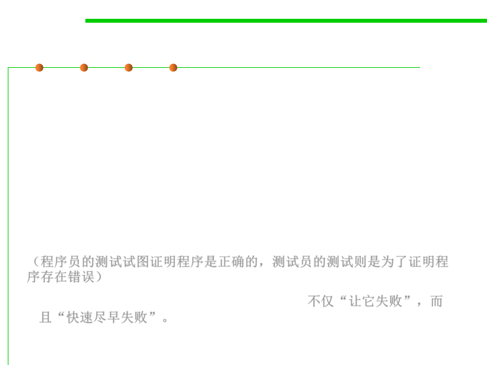

7.5 Testing and Test-First Programming
Putting on Your Testing Hat
▪ Testing requires having the right attitude. When you’re coding,
your goal is to make the program work, but as a tester, you want
to make it fail.
▪ That’s a subtle but important difference. It is all too tempting to treat
code you’ve just written as a precious thing, a fragile eggshell, and
test it very lightly just to see it work.
▪ Instead, you have to be brutal. A good tester wields a
sledgehammer and beats the program everywhere it might be
vulnerable, so that those vulnerabilities can be eliminated.
（程序员的测试试图证明程序是正确的，测试员的测试则是为了证明程
序存在错误）
▪ Not only “make it fail”, but also “fail fast”. 不仅“让它失败”，而
且“快速尽早失败”。